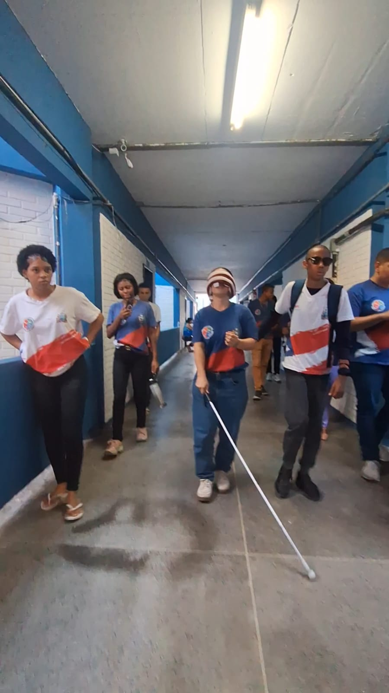

Etapa 1 • Geografia
1. Reconhecimento do Espaço Escolar
Iniciamos o projeto analisando a maquete tátil e o mapa da escola sob a perspectiva da Geografia Inclusiva. Os alunos mapearam os trajetos diários, identificando rampas, degraus e pontos de referência essenciais para a locomoção do estudante cego. Essa análise espacial foi a base para planejar a maquete sensorial e os pontos de orientação por onde o protótipo irá navegar.